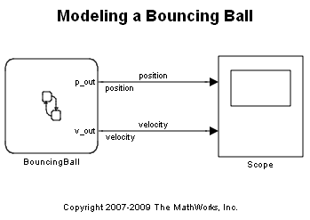
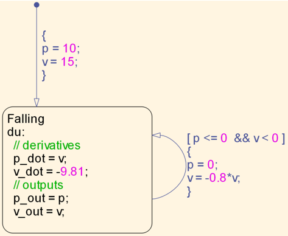
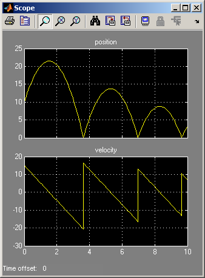

Modeling a Bouncing Ball
This model demonstrates how to define continuous time state variables and their derivatives in Stateflow®. The dynamics of a bouncing ball can be defined in terms of two continuous time variables, namely the position and the velocity of the ball.
In order to model this in Stateflow, you first need to create a chart whose "Update Method" is "continuous" and which has "Enable zero-crossing detection" option checked.
Once this is done, you can create local variables whos "Update Method" is "continuous". For this model, we create two local variables p and v whose update method is "continuous".
When you create a "continuous" local variable, you can also define its time-derivative by using the notation varname_dot where varname is the name of the continuous variable. Thus the variable p_dot refers to the time derivative of the position variable p. You should not attempt to create a variable with this name in the chart. You automatically get access to this variable once you declare p to have "continuous" update.
Using this convention, the bouncing ball can be modeled using the following Stateflow chart:
For most of the time, the ball is just freely falling under the influence of gravity. The dynamics in this "mode" are specified in the "during" section of the "Falling" state. The sudden resets in position and velocity which occurs when the ball bounces are modeled using a self-transition with a condition action which performs the state reset.
When this model is simulated, we get the familiar bouncing trajectory of the ball:
The top axis represents the position and the bottom axis of the scope represents the velocity.